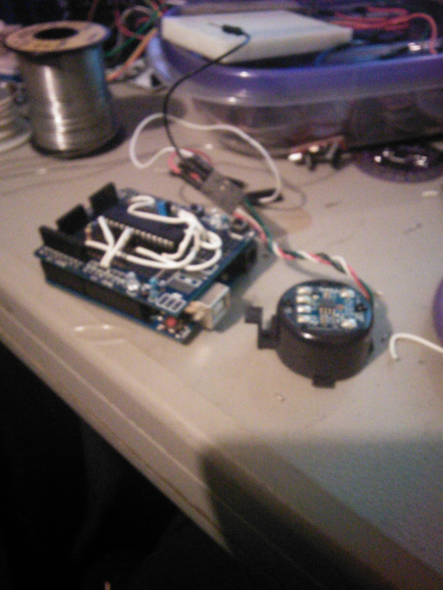
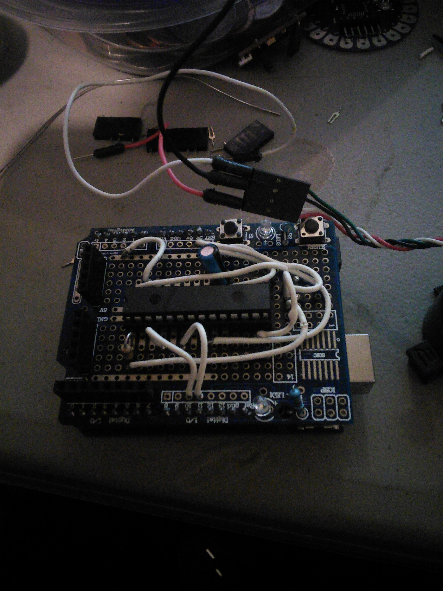
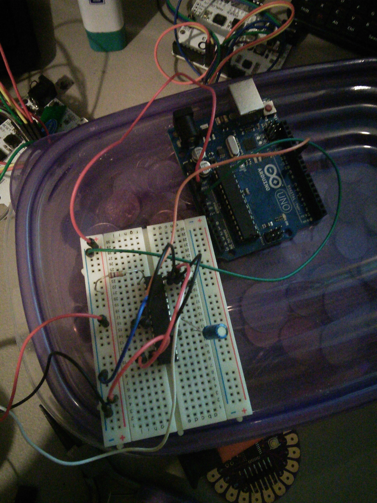

3/16/2014 The SPO-512 Speech Synthesizer
1. Project Reference Number / Title:
- 20140316 The SPO-512 Speech Synthesizer
Mar 16 - 17, 2014
A side project this week, The SPO-512 Speech Synthesizer also known as the RoboVoice from SpeechChips.com http://www.speechchips.com/shop/item.aspx?itemid=22
This is a PIC microcontroller that takes a serial 9600 baud input (ASCII data) and outputs (speaks) VOICE, There are a couple of demos of this on the website. I bought the chip probably 2 years ago, and it sat on my desk. There is a design circuit in the PDF on the site, turns out most of the circuit is an amplifier for the speaker, the circuit to make this work is really pretty simple. 4 grounds, and 4 3.3v power - a TX line, a RX line, a Cap for filtering (I think, left it off and it didn’t sound as good, I also didn’t have the 4.7u cap that is called for, I used a 10u, seems to be fine so I think it is just filtering) and an output to the speaker.
I have a lot of parts that I pulled out of old computers, turns out a few of the dell systems have little tiny amplified speakers build in them, these things work great, and I wish I would have pulled more out. I am running my little speaker off 5v, but I wonder if it wasn’t hooked up to 12v in the computer - seems like they were much louder. Doesn’t matter it works, and I think it will work at 3.3v as well.
I think I’ve talked to the man who invented this chip, I think he is very active in the “Basic Stamp” forums, and very knowledgable about all things microchip.
Speech chips offered a robovoice on an arduino shield, I don’t think they do any more. So after I went from breadboard, I moved the whole thing over to a proto board, (well the speaker isn’t mounted, I really wanted to mount it, but…)
So here are a few pictures of my side project, and I’ll bring it with me to the meeting on Thurs.
{width="6.5in" height="8.666666666666666in"}
{width="6.5in" height="8.666666666666666in"}
{width="6.5in" height="8.666666666666666in"}
It took a couple of hours to move it from breadboard to proto board, and I ran into a couple of issues, the 1st, the chip is 28 pin, the board only had enough multi-tap pins for a 20 pin microchip, (Issue was fairly easy to overcome). 2nd my proto board didn’t give any tap to the 3.3v line of the arduino, in fact it was shorted to the 5v line (Huh?) Yeah that was a mistake from the manufacturer I am sure, but I can see how someone not paying attention could short out the Arduino board. This proto board provide 3 different 5v rails, and 3 different ground rails, (one set of those rails ended up being UNDER the IC chip and not at all in a useful spot), No 3.3v rail, I had to make my own. but that ended up taking up more room on the board then really needed. I could have done without one of the 5v rails for a replacement of a 3.3v rail, probably would have had to move the IC but I could have dealt with that.
My last issue was - this proto board had stackable header on it. I wanted to make this semi-permanent so I didn’t want to plug a wire into the header, I wanted to use the port directly. I had to remove the most of the headers which caused another problem, it was a little hard to remove the headers, and the holes closed behind being removed, for some reason my solider sucker just wasn’t working well tonight.
Over all thou, this was a fun project, now I just need to order a couple more protoboards for the next time I want to move off breadboarding.